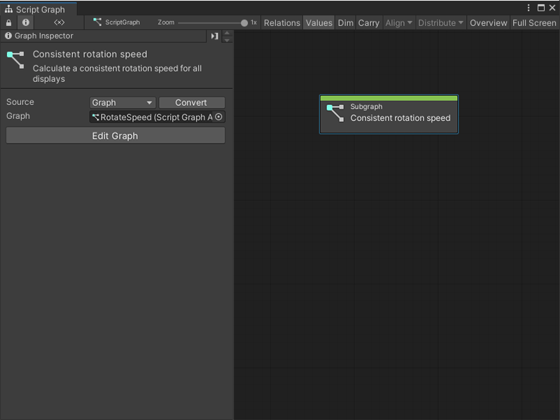

Subgraph node¶
Use a Subgraph node to reference and trigger another Script Graph’s logic from inside a parent Script Graph.

For more information on Subgraphs, see Subgraphs and State Units. For more information on Script Graphs, see Graphs.
Fuzzy finder category¶
The Subgraph node is in the Nesting category in the fuzzy finder.
You can go to the Graphs category and select any Script Graph to create a Subgraph node. For more information on how to create a Subgraph, see Add a Subgraph to a Script Graph.
Available ports¶
By default, a Subgraph node has no ports.
Use the Graph Inspector to specify the following on a Script Graph:
Trigger Inputs.
Trigger Outputs.
Data Inputs.
Data Outputs.
These determine the type and number of ports available on its Subgraph node. For more information on how to define ports on a Script Graph, see Add a Trigger or Data port to a Script Graph.
Port type |
Description |
|---|---|
Trigger Input |
Adds a control input port to the Subgraph node for the Script Graph. Use a Trigger Input to choose which node or nodes from a parent graph triggers Visual Scripting to run the logic in the Subgraph. |
Trigger Output |
Adds a control output port to the Subgraph node for the Script Graph. Use a Trigger Output to choose which node or nodes Visual Scripting triggers after the logic contained in the Subgraph finishes. |
Data Input |
Adds a data input port to the Subgraph node for the Script Graph. Use a Data Input to receive data from a parent graph. |
Data Output |
Adds a data output port to the Subgraph node for the Script Graph. Use a Data Output to send data back to a parent graph. |
Example graph usage¶
[!TIP] A Subgraph node can use a new blank Script Graph or an existing Script Graph from a project. For more information, see Add a Subgraph to a Script Graph.
In the following example, the Subgraph node Character Move references a graph that makes a GameObject move based on a user’s input. It has the following:
One Trigger Input port.
One Trigger Output port.
Three Data Input ports.
One Data Output port.
After every Update Event in the application, the Character Move Subgraph node triggers and takes the X, Y, and Z coordinates of the current GameObject’s Transform component. The Subgraph node then outputs a new Vector 3 value, which the parent graph assigns to the current GameObject with a Transform Set Position node.
![An image of the Graph window. The Output Trigger port on an On Update Event node connects to the Input Trigger port on a Subgraph node called Character Move. A Transform Get Position node gets the position of the current GameObject's transform in a Vector 3. The Transform Get Position node connects its Vector 3 output port to a Vector 3 Get X, Vector 3 Get Y, and Vector 3 Get Z node. The Get X, Get Y, and Get Z nodes connect to the X, Y, and Z data input ports on the Character Move Subgraph node, respectively. The Character Move Subgraph node's Output Trigger port connects to the Input Trigger on a Transform Set Position node, set to the current GameObject's transform. The Character Move Subgraph connects its Vector 3 output port to the Vector 3 input port on the Set Position node.](../../../../../../_images/vs-subgraph-node-use-example.png)
The Subgraph node reduces the number of nodes in the parent graph.
[!TIP] To see the Script Graph attached to the Subgraph node in this example, see either Input node or Output node.